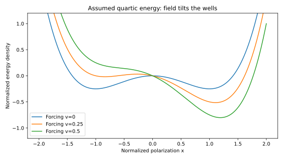

Chapter 2 · Materials physics · 14–18 hours
Materials, symmetry, and interfaces
Why does the same chemical formula produce different electrical behavior after a different process?
Replacing SiO₂ with a ferroelectric is not equivalent to installing a dielectric with a larger constant. A ferroelectric can retain a switchable structural state, create bound charge, respond differently to identical pulses after different histories, and evolve during cycling. A useful memory therefore depends on a particular thin-film stack and process, not just a chemical label.
Prerequisites: Chapter 1, electrostatic energy, derivatives. Objectives: distinguish composition from phase, derive a minimal ferroelectric energy landscape, compare hafnia/zirconia with perovskites and oxide channels, derive depolarization from interfaces, and design measurements that distinguish mechanisms.
2.1 Composition is not a phase
A chemical formula specifies elemental proportions. A crystal structure specifies positions and symmetries. A phase combines structural order and thermodynamic state. Hafnium dioxide, HfO₂, can adopt different structures depending on temperature, size, stress, defects, and processing. Hafnium–zirconium oxide, commonly HZO, means a mixed oxide Hf₁₋ₓZrₓO₂; in many studied stacks $x=0.5$. The abbreviation does not specify which fraction of a film is polar.
Polarization is dipole moment per unit volume. A polar crystal permits a nonzero vector under its symmetry. Ferroelectricity additionally requires that an applied field can switch between distinct polarization states. A polar material is not necessarily practically switchable before it breaks down. A hysteretic electrical measurement can also arise from trapped charge, so neither a structural label nor one electrical loop alone settles the question.
The inversion operation maps position $\mathbf r$ to $-\mathbf r$ and reverses a polar vector. If the equilibrium structure is invariant under inversion and has a unique symmetric state, a spontaneous macroscopic polar vector cannot survive that operation. Losing inversion symmetry permits polarization but does not dictate its magnitude, barrier, switching pathway, or stability. Defects and interfaces can break local symmetry even when a coarse structural average appears nonpolar.
2.2 An energy landscape explains bistability
Let $P$ be a scalar polarization component normal to the film. Consider a uniform, isothermal, single-domain teaching model with free-energy density $f(P)=\alpha P^2/2+\beta P^4/4-EP$, where $E$ is the applied internal field. The coefficients encode the material and conditions. With $f$ in J/m³ and $P$ in C/m², $\alpha$ has units J·m/C² (equivalently m/F), and $\beta$ has units J·m⁵/C⁴. Taking $\alpha\lt0$ and $\beta\gt0$ creates a double well at zero field. This quartic model is selected to expose the mechanism; real hafnia phase competition need not follow a second-order quartic transition.
Stationarity requires $df/dP=\alpha P+\beta P^3=0$, hence $P=0$ or $P^2=-\alpha/\beta$. The second derivative is $\alpha+3\beta P^2$. At zero it is negative, giving a local maximum; at either nonzero root it equals $-2\alpha$, giving a local minimum. The barrier density from a minimum to the origin is $\alpha^2/(4\beta)$.
A positive field tilts the landscape through $-EP$ and favors positive polarization. The metastable negative well disappears when both the first and second derivatives vanish. Its disappearance field is an intrinsic homogeneous instability of this model. Real switching often occurs earlier by nucleating and growing domains, so equating this field to a measured coercive field without a microstructural model is unjustified.
For a dimensionless example, take $f=x^4/4-x^2/2-vx$. At zero forcing $v$, the wells are at $x=\pm1$, with a barrier of $1/4$ in normalized energy. The metastable branch reaches zero curvature at $|x|=1/\sqrt3$, giving forcing magnitude $2/(3\sqrt3)\simeq0.3849$. These are normalized values, not hafnia constants. The circuit demonstration later uses this energy landscape with an assumed relaxation time.

2.3 Domains, walls, and the failure of uniformity
A domain is a region with approximately common polarization orientation. A domain wall separates differently ordered regions. Allowing polarization to vary spatially adds a gradient contribution $g|\nabla P|^2/2$ to the free-energy density, with positive gradient coefficient $g$. Sharp spatial variation costs energy; electrostatic boundary conditions can nevertheless favor domains because alternating polarization reduces uncompensated surface charge.
For a uniaxial wall in the quartic model, balancing gradient and bulk terms gives a characteristic wall thickness proportional to $\sqrt{g/|\alpha|}$. This scaling follows because gradient energy over a width $\ell$ is of order $gP_s^2/\ell^2$, whereas the double-well energy scale is of order $|\alpha|P_s^2$. Equating them yields the length scale. It does not determine the exact wall profile or atomically discrete switching barrier.
The bound charge at a wall is related to the discontinuity of normal polarization. Head-to-head dipoles create a charged wall of opposite sign to tail-to-tail dipoles. Without compensation, that charge has an electrostatic cost. The acquired zirconia preprint combines atomic imaging and calculations to investigate closely spaced charged walls and oxygen-related compensation. Its evidence concerns nanoscale structural domains; it does not establish that every such domain can be independently addressed as a stable memory bit. Afroze et al., current v2.
The domain-free negative-capacitance analysis likewise makes wall-energy and layer-thickness conditions explicit. A stable homogeneous solution of a lumped energy model must also remain stable against spatial perturbations. Checking only $d^2f/dP^2$ for uniform $P$ misses that second requirement. Ravindran, Ravikumar, and Khan, published 2023; arXiv upload 2026.
2.4 Hafnia and zirconia: phase fractions are engineering variables
Hafnia and zirconia are fluorite-derived oxides whose cation–oxygen arrangement can transform among structural variants. Thin-film ferroelectric hafnia commonly involves a polar orthorhombic structure; monoclinic and tetragonal fractions, texture, and grain boundaries influence the measured response. A film containing several phases does not have one microscopic switching mechanism or one coercive field. An ensemble hysteresis loop averages that heterogeneity.
Zirconia-rich films can exhibit a double-loop response associated with field-induced transitions between nonpolar and polar states. The term antiferroelectric is often used at the device-response level; it must be tied to the actual structural evidence rather than assumed to mean one universal antiparallel-dipole lattice. A double hysteresis loop alone is insufficient to choose between microscopic explanations. Khan-coauthored work on structural-transition negative capacitance in zirconia is a useful comparison to the simpler switching model in Chapter 3. Hoffmann et al., 2022.
Atomic layer deposition, or ALD, builds a film through alternating surface-reaction steps. Its appeal for three-dimensional structures is conformal coverage when reactants reach and react with the available surfaces. “One cycle” does not mean “one atomic plane”: growth per cycle depends on chemistry, surface termination, temperature, and nucleation. Thermal ALD and plasma-enhanced ALD can differ in residual impurities, damage, oxygen chemistry, and crystallization behavior.
After deposition, annealing can crystallize the film and redistribute defects. Electrode materials can supply or remove oxygen, impose stress, and change screening or injection barriers. These variables are coupled: changing the electrode to improve phase formation may also change leakage and fatigue. The WO₃₋ₓ study and the ALD-oxidant study motivate treating oxygen chemistry as a controlled variable with electrical consequences, not labeling every oxygen vacancy as either harmful or beneficial in all contexts. WO₃₋ₓ study; oxidant study.
Wake-up denotes the evolution, often an increase, of switchable response during early cycling. Fatigue denotes degradation with continued cycling. These names describe observations, not unique causes. Redistribution of charged defects, changes in internal fields, phase changes, and interface damage can contribute differently under different protocols. “Wake-up-free” therefore needs a stated pristine state, pulse history, read delay, temperature, and observation interval.
2.5 BaTiO₃: a related mechanism in a different materials platform
Barium titanate, BaTiO₃, is a perovskite oxide. Its structure places a transition-metal cation within an oxygen octahedral network, with a larger cation in the surrounding lattice. Relative ionic displacements and electronic redistribution can create a polar state. This differs structurally from fluorite-derived hafnia and zirconia; a common polarization variable does not imply identical growth, phase stability, or integration constraints.
Epitaxy means that the film grows with an orientational relationship to a crystalline substrate. Lattice mismatch can impose strain when the film remains coherently constrained. If $u$ denotes strain, a coupling term such as $-q_euP^2$ changes the effective quadratic coefficient: $\alpha_{\mathrm{eff}}=\alpha-2q_eu$ in the chosen convention. This shows how mechanical boundary conditions can shift the energy landscape. It is a scalar illustration; a real epitaxial film requires tensor elastic and electrostrictive relations.
As thickness increases or defects form, strain can relax. Thin-film electrical behavior also depends on screening, electrode chemistry, and interfacial layers. The acquired BaTiO₃ study investigates kinetic control in epitaxial capacitors; its processing trajectory is part of the scientific object. A bulk tabulated Curie temperature or polarization cannot replace the thin-film measurements. Kinetic control study, author preprint linked to 2025 publication.
The practical comparison is conditional. Perovskite epitaxy offers controlled orientation for studying mechanisms, while ALD hafnia-based films offer a different route to conformal integration. Neither description alone proves superior yield, endurance, or system energy. Compare complete stacks at matched geometry, voltage, temperature, and read criteria.
2.6 Oxide channels: retain electrostatics, revisit transport and stability
Indium oxide, In₂O₃, and doped variants appear in the verified research as transistor channels. IWO denotes tungsten-doped indium oxide; IGO denotes gallium-doped indium oxide. These are semiconductor channels, not alternative names for the ferroelectric gate. A stack can therefore contain an oxide semiconductor, an interfacial dielectric, and a separate ferroelectric oxide, each with a distinct role.
In many n-type oxide semiconductors, relatively extended cation-derived conduction states can support electron transport despite structural disorder. This helps explain why amorphous channels can function without silicon's long-range crystalline order. But disorder, localized tail states, contacts, oxygen-related defects, and hydrogen can still influence carrier density and bias stability. High apparent mobility at one bias is not equivalent to low defect density or stable threshold under prolonged operation.
Dopants can alter bonding and defect formation as well as carrier supply. The silicon intuition “more donors means more free electrons” is therefore incomplete. A measured current change can reflect mobility, contact resistance, carrier concentration, electrostatic coupling, or a mixture. Distinguishing them requires additional bias, geometry, frequency, or temperature measurements. The 2026 agentic-calibration preprint explicitly investigates such ambiguity using held-out device conditions. Agentic TCAD study.
The thermal-processing comparison uses an identical 8 nm HZO / 3 nm Al₂O₃ / 8 nm HZO stack with different oxide channels. The authors report IGO and IWO functionality up to 650 °C for different durations before channel failure. Those are processing-exposure results for specified capped structures, not permissible operating temperatures for a finished chip. The distinction between cumulative process thermal budget and service junction temperature is essential. Thermal-processing study, pp. 1–4.
2.7 Depolarization: an interface can undo a bulk advantage
Consider a ferroelectric layer of thickness $t_f$ and background relative permittivity $\epsilon_b$, in series with a linear dielectric of thickness $t_i$ and relative permittivity $\epsilon_i$. Hold a uniform polarization $P$ fixed, neglect free charge at their interface, and short the external electrodes. Normal displacement is continuous: $D=\epsilon_0\epsilon_bE_f+P=\epsilon_0\epsilon_iE_i$. Zero terminal voltage gives $t_fE_f+t_iE_i=0$.
Substitute $E_i=(\epsilon_0\epsilon_bE_f+P)/(\epsilon_0\epsilon_i)$ into the zero-voltage equation. Collect terms multiplying $E_f$ and divide. The minus sign means the field opposes the fixed polarization. As $t_i\to0$, perfect screening is recovered and $E_f\to0$ within this idealization.
Using the synthetic $P=0.13$ C/m², $t_f=10$ nm, $\epsilon_b=33$, $t_i=1$ nm, and $\epsilon_i=3.9$ gives a substantial opposing field. The project computes it rather than treating polarization as immune to interfaces. If that field destabilizes the assumed $P$, solve electrostatics and the constitutive law self-consistently; do not retain the fixed-polarization result as a stable-device prediction.
A trapped-charge sheet changes the displacement boundary condition by its sheet density. Finite electrode screening adds another series penalty. Real interfaces therefore require more than selecting a bulk polarization value. A thin interfacial oxide can improve voltage coupling while worsening leakage or damage; a thicker barrier can improve retention while making programming harder. This is the first complete example of one materials intervention producing competing device effects.
2.8 Characterization must identify what changed
| Technique | Observable | Inference boundary |
|---|---|---|
| X-ray diffraction | Diffraction intensity versus scattering geometry | Phase/texture inference can suffer overlapping peaks and small phase fractions. |
| Electron microscopy | Projected structure and local contrast | A thin prepared lamella may differ from an intact operating device; beam and preparation damage matter. |
| XPS | Core-level spectra and chemical environments | Defect populations are inferred through a model; sputtering can change chemistry. |
| PUND pulses | Switched versus repeated-pulse charge difference | Leakage and trapping must match between comparison pulses. |
| Transfer curves / charge pumping | Current versus bias / interface-trap-sensitive response | Extraction conventions and parasitics must be reported. |
The September 2026 interfacial-charge preprint combines chemistry, reversal measurements, and modeling. That combination is more discriminating than a larger memory window alone. Its internal-bias interpretation remains an authors' physical explanation supported by those measurements, not a uniquely proven atomistic mechanism. Interfacial-charge study.
2.9 From chemical bonding to an experiment you can interpret
The Si/Ge picture begins with a tetrahedral covalent network and extended Bloch states in a nearly periodic crystal. An oxide adds a different balance of ionic charge transfer, covalent hybridization, local coordination, and charged defects. Formal oxidation states are useful bookkeeping—Hf and Zr are conventionally +4 in their dioxides—but are not measured point charges. Electronic redistribution and atomic displacement jointly determine polarization. An “ionic” material still has covalent mixing, and a “covalent” material still responds to electric fields.
In a crystal, the first-order polarization response to a displacement can be described by a Born effective charge tensor. This response coefficient measures how polarization changes when an atom moves; it need not equal the formal oxidation state. The concept connects atomic structure to electrical response, but calculating macroscopic polarization from a single projected atomic displacement requires crystallographic orientation, cell volume, displacement pattern, and a consistent electronic model. A visually striking microscopy image is not automatically a direct numerical measurement of terminal switchable charge.
For phase competition in a finite film, compare contributions to free energy rather than bulk labels alone. A minimal bookkeeping expression is $$\begin{aligned}G={}&A t g_{bulk}+A\gamma_{top}+A\gamma_{bottom}\\&+G_{elastic}+G_{electrostatic}+G_{defects}.\end{aligned}$$, where $A$ is area, $t$ thickness, $g_{bulk}$ bulk free-energy density in J/m³, and the surface/interface energies $\gamma$ have units J/m². The other terms are energies in joules. Dividing by volume gives interface contributions proportional to $1/t$, which explains why a phase unfavorable in bulk can become competitive in a thin film. This scaling argument does not identify which phase wins without the actual energies and process path.
Kinetics can prevent the minimum-free-energy phase from being reached. Nucleation barriers, anneal duration, cooling, grain boundaries, and chemical exchange with electrodes constrain the trajectory. Thus two films with identical nominal composition and final temperature can have different phase fractions. An equilibrium phase diagram and a fabrication process map answer different questions. The BaTiO₃ kinetic-control study and the ALD/electrode papers illustrate why growth history belongs in the model.
Strain, grain orientation, and domains also change what a terminal measurement averages. A film can contain grains with different polar-axis orientations. If a grain's polarization makes angle $\theta$ with the surface normal, its normal component is $P\cos\theta$. A distribution of orientations and polar fractions can reduce measured normal switchable charge without reducing each grain's local polarization magnitude. Conversely, texture changes can increase the measured signal without changing the underlying single-crystal magnitude. Leakage subtraction and incomplete switching add further ambiguity.
Charged defects change both electrostatics and chemical stability. Removing oxygen can leave a vacancy with a charge state determined by local Fermi level and available electrons. The shorthand “oxygen vacancy concentration” hides charge state, location, mobility, and compensation. A defect at an electrode interface can affect injection differently from one in a grain boundary. A channel dopant can change the tendency to form defects as well as the density of carriers. These coupled effects are why a one-dimensional “defects are bad” rule is inadequate.
For an oxide semiconductor, retain Poisson's equation and charge continuity from silicon. Reconsider the density of states, ionization, mobility law, and contact assumptions. In an amorphous or disordered channel, localized tail states can store charge while extended states carry current. A gate sweep can therefore change total charge and conducting charge by different amounts. Extracting field-effect mobility from transconductance using an ideal capacitance can be misleading if capacitance, contact resistance, or trap occupation varies strongly with bias. Bias-stress and temperature measurements can expose the missing dependence.
| Source-specific system | Conditions and dimensions | What can be compared | Uncertainty / missing control |
|---|---|---|---|
| Synthetic fluorite capacitor, 2021 Figure 2 | 10 nm; Pₛ 14 and Pᵣ 13 µC/cm²; E꜀ ±1 MV/cm; background εᵣ 33. | Equation extraction and displacement/polarization distinction. | Exact chosen inputs; no experimental uncertainty or lifetime information because the example is synthetic. |
| p-channel Si/ZrO₂ FeFET, thesis §3.3 | 5 nm ZrO₂ / 1.5 nm SiO₂; W/L = 30/8 µm; read drain −50 mV; 10 µs pulses at 3.4/−7 V. | Screening and observed read-window modeling on this stack. | Complete author calibration and raw measured uncertainty are not available in our reconstruction. Terminal pulse divided by FE thickness overstates internal field if other voltage drops are ignored. |
| Laminated oxide-channel comparison | 8/3/8 nm HZO/Al₂O₃/HZO; 10% IGO versus 4% IWO; reported 650 °C processing survival for 30 versus 10 minutes. | Channel-dependent thermal exposure under matched gate stack and stated capping/process conditions. | Not a common continuous operating limit. Device statistics, full integration sequence, and service reliability need separate evaluation. |
| Epitaxial BaTiO₃ capacitors | Growth and kinetic trajectory specified in the source; not assigned the HZO table's parameters. | Mechanism of process-dependent thin-film phase behavior. | Different crystal platform, electrodes, and boundary conditions prevent an apples-to-apples memory ranking. |
A disciplined comparison uses the same observable and boundary. Compare switchable charge after matched pulses, or threshold distributions after matched stress, rather than a capacitor's polarization with a transistor's current window. If a complete matched comparison is unavailable, report the mechanisms and missing controls instead of assembling a spurious performance league table.
Advanced exercise with solution. Two phases differ in bulk free-energy density by $\Delta g=10^7$ J/m³, favoring phase A. Suppose the combined top/bottom interface energy favors phase B by 0.2 J/m², and neglect elastic and electrical differences. At what thickness can the interface term reverse the preference? Solution: the difference per area is $t\Delta g-0.2$ J/m², so the crossover is $t=0.2/10^7=20$ nm. Below that thickness the assumed interface advantage dominates. These numbers are synthetic; an actual phase boundary also requires the omitted terms and accessible transformation kinetics.
2.10 Let the polarization respond to its own depolarizing field
The fixed-polarization calculation gave a warning, but it did not say what state the film actually adopts. Return to the running stack: a uniform ferroelectric separated from an electrode by a linear dielectric. Write $K=1/[\epsilon_0\epsilon_b+\epsilon_0\epsilon_i t_f/t_i]$, so its zero-bias depolarizing field is $E_f=-KP$. The coefficient $K$ is positive and has the same units as the Landau quadratic coefficient. Assume that the Landau constitutive relation describes the switchable polarization separately from the already counted linear background. The zero-field stationarity condition becomes $(\alpha+K)P+\beta P^3=0$.
This is the key feedback: increasing polarization increases its opposing internal field, which changes the equilibrium polarization. Holding the isolated-film spontaneous polarization fixed ignores that feedback. The stationary nonzero states now have magnitude $P_* =\sqrt{-(\alpha+K)/\beta}$ and exist only if $\alpha+K\lt0$. The series dielectric can therefore shrink the polarization continuously and remove bistability in this idealized quartic system. Improving screening affects both state magnitude and the energy barrier; it is not merely a small correction to terminal voltage.
One can obtain the same condition by eliminating displacement from the combined electrostatic and material energy, leaving an added term $KP^2/2$ per ferroelectric volume. Differentiation of that term gives $KP$, matching the depolarizing penalty. The barrier density is then $(\alpha+K)^2/(4\beta)$ while the two nonzero minima exist. Adding the energy is legitimate only after the electrical boundary condition is specified. Fixed free charge and fixed terminal voltage require different thermodynamic potentials; casually mixing them can reverse a stability conclusion.
Normalize the isolated-film coefficient to −1 and the quartic coefficient to 1. Denote normalized series stiffness by $\eta=K/|\alpha|$. The stable magnitude becomes $\sqrt{1-\eta}$ and the barrier becomes $(1-\eta)^2/4$ for $0\le\eta\lt1$. At $\eta=0.75$, polarization is half its isolated value but the barrier is only one sixteenth as large. A moderate decrease in measured polarization can thus accompany a much larger change in thermal stability. This comparison does not predict a retention time because it does not yet specify a physical switching volume or escape path.
The cumulative depth laboratory sweeps this bifurcation and records the stationary magnitudes and barriers in its results. It preserves the zero-polarization solution once $\eta$ exceeds one rather than taking a square root of a negative number and hiding the failure. The physical interpretation is loss of the assumed bistability, not a numerical inconvenience. The next question is whether a spatially nonuniform state can be preferable before the uniform states disappear.
2.11 Derive a domain wall rather than assigning a domain size
Consider a neutral, one-dimensional 180-degree wall, with coordinate $z$ normal to the wall. Let the polarization component being reversed lie parallel to the wall, so this ideal profile creates no bound wall charge. Assume infinite extent, no defects, and no applied field. Write its excess energy per wall area as the integral of $g(P')^2/2+\beta(P^2-P_s^2)^2/4$, where prime means $d/dz$, $P_s^2=|\alpha|/\beta$, and $g\gt0$ is the gradient coefficient. Subtracting the bulk minimum makes the integrand tend to zero far from the wall.
Varying this functional gives $gP''=\beta P(P^2-P_s^2)$. Multiply by $P'$ and integrate, using vanishing derivative at either bulk minimum. The result is $g(P')^2/2=\beta(P^2-P_s^2)^2/4$. Along the minimum-energy wall, gradient and excess bulk contributions are equal point by point. This first integral makes both the profile and its energy accessible.
The profile approaches opposite minima at large positive and negative $z$. Substitution into the differential equation checks the factor of two in the width. Integrating the two equal energy contributions uses $\int_{-\infty}^{\infty}\operatorname{sech}^4 y\,dy=4/3$, producing wall energy $\sigma_w$ in J/m². In normalized units $g=|\alpha|=\beta=1$, numerical integration gives 0.9428090416, agreeing with $2\sqrt2/3$. This is an independently checked continuum construction, not an atomistic estimate for the zirconia images.
A finite wall energy competes with electrostatic energy saved by forming domains. A schematic stripe pattern of width $w$ in a film of thickness $t$ has wall energy per footprint area proportional to $\sigma_w t/w$. If its stray-field cost grows approximately as $cP_s^2w/\epsilon$, with geometry factor $c\gt0$ and an appropriate permittivity $\epsilon$, minimizing the sum gives $w\propto\sqrt{\sigma_w t\epsilon/P_s^2}$. The square-root scaling follows from a decreasing wall cost and increasing stray-field cost. Screening electrodes, charged walls, discrete atomic structure, or a stripe width comparable to the film thickness can invalidate the assumed electrostatic term.
This distinction is essential when reading the sub-nm² zirconia-domain study. Charged walls need compensating charge and an atomistic description; the neutral continuum wall above is a comparison model. A structural domain area does not specify a write electrode, an isolation barrier, read noise, or the thermal stability of an individually selected state. Dividing chip area by a microscopy domain area therefore does not give a demonstrated memory capacity. To make that inference, the source would need electrical addressability and retention evidence at the same scale.
2.12 Design an experiment that separates processing mechanisms
Suppose an altered ALD oxidant produces a larger switched-charge signal. There are at least four distinct explanations: more polar material, better orientation of the same polar fraction, more complete switching within the measurement pulse, or a changed nonswitching current subtraction. Each explanation predicts something different under a controlled perturbation. A useful experiment varies pulse width while keeping peak voltage and initial state fixed, measures structural texture independently, and compares leakage under repeated pulses. The purpose is to make the candidate explanations disagree observably.
Let $f_p$ be polar volume fraction, $P_{ m loc}$ local polarization magnitude, $a_o$ the signed orientation projection averaged over contributing regions, and $s(t_p)$ the fraction switched by pulse width $t_p$. An illustrative terminal signal is $\Delta Q/A=2f_pP_{ m loc}a_o s(t_p)+q_{ m nuisance}$, where $q_{ m nuisance}$ is residual nonswitching charge density after subtraction. This expression is bookkeeping, not a complete microstructural model. Nevertheless, it exposes a degeneracy: one measured signal supplies one equation for several changing factors. A larger signal cannot uniquely identify $P_{ m loc}$.
Positive-up-negative-down, or PUND, attempts to remove repeated-pulse contributions by comparing a switching pulse with a subsequent pulse of the same polarity that should not switch the polarization. If leakage is identical during both pulses, subtracting integrated charge cancels it. If the first pulse changes trap occupancy or conductivity, the currents are not identical and the cancellation is incomplete. Changing the interpulse delay tests this assumption. A delay-dependent subtracted charge is evidence that the subtraction protocol and internal relaxation interact; it is not automatically evidence for or against ferroelectricity.
The ALD-oxidant study and WO₃₋ₓ electrode study motivate this joint structural–electrical analysis. Their processing interventions are scientifically interesting because oxygen chemistry can affect phase formation and charge exchange together. Treating either paper as a single scalar improvement factor would discard its mechanism. Likewise, the BaTiO₃ kinetic-control study asks what processing pathway is accessible, not merely which bulk phase has the lowest equilibrium energy.
For an unfamiliar materials paper, construct a causal sketch before reading its conclusion: process changes structure and defects; structure and defects change polarization and conduction; measurement history changes which of those responses is visible. Then locate the actual controls on each arrow. A matched composition with a different electrode is not a control that holds interface chemistry fixed. A post-anneal structural image may not characterize the electrically cycled device. These are specific limitations that determine which follow-up experiment would be informative.
1. A screening improvement with two different consequences
In the normalized uniform model, reduce $\eta$ from 0.75 to 0.5. Quantify the change in stable polarization and barrier, and explain why neither number is a measured retention improvement.
Solution. Polarization rises from 0.5 to $\sqrt{0.5}=0.7071$, a factor $\sqrt2$. The barrier rises from $0.25^2/4=0.015625$ to $0.5^2/4=0.0625$, a factor four. Retention would require the activation energy of the actual escape pathway, including a nucleation volume and domain-wall or defect contributions. The calculation establishes a uniform free-energy trend under fixed coefficients. It suggests that screening is worth measuring, but it does not convert a materials intervention into years of storage life.
2. Does a sharper wall always favor smaller domains?
Change $g$ by a factor four while holding $\alpha$ and $\beta$ fixed. Find the wall-width and wall-energy changes, then the stripe-width change under the schematic scaling.
Solution. Both wall width $\delta$ and wall energy $\sigma_w$ grow by two because they scale with $\sqrt g$. The stripe width scales with $\sqrt{\sigma_w}$ and therefore grows by $\sqrt2$, all other factors fixed. The wall thickness and domain width are different lengths governed by different balances. An image of one cannot be substituted for the other. If the resulting domain width becomes comparable to wall thickness, the assumption of distinct bulk-like domains separated by narrow walls also fails.
2.13 Foundation exercises and solutions
3. Polar versus ferroelectric
Does observing a non-centrosymmetric structure prove a usable memory?
Solution. No. The symmetry permits a polar state but does not establish reversible electrical switching, retention, endurance, distinguishable read states, or addressability. Combine structural evidence with controlled switching and reliability tests. Each additional property has its own observable.
4. Interface-thickness intervention
In the fixed-P shorted-stack model, what happens when the interface becomes thinner? Name one omitted penalty.
Solution. The denominator contains $\epsilon_0\epsilon_i t_f/t_i$, which increases as $t_i$ decreases. The magnitude of the depolarizing field falls. Tunneling and breakdown can worsen as the layer thins. Since the model includes neither, it gives a direction for electrostatics, not a global process optimum.
5. Double-well stability
For $f=x^4/4-x^2/2$, compute the stationary points, curvature, and barrier.
Solution. $f'=x^3-x=0$ gives $0,\pm1$. Curvature $3x^2-1$ is $-1$ at zero and $2$ at either nonzero point. The wells have energy $-1/4$ and the origin zero, hence barrier $1/4$. Multiplying a density barrier by an arbitrary device volume is not a valid nucleation-barrier estimate without a switching-path model.
6. A misleading process claim
A channel survives a brief 650 °C anneal. Can it operate continuously at 650 °C?
Solution. The anneal establishes survival under its stated duration, atmosphere, capping, and post-exposure test. Continuous operation adds electrical stress, contacts, packaging, time-dependent degradation, and potentially different chemistry. The inference does not follow. Measure service-life performance under operating conditions.
You can now ask which phase, interface, defect population, and protocol a material claim refers to. Chapter 3 turns that discipline into a reproducible model and an explicit test of what the data can identify.